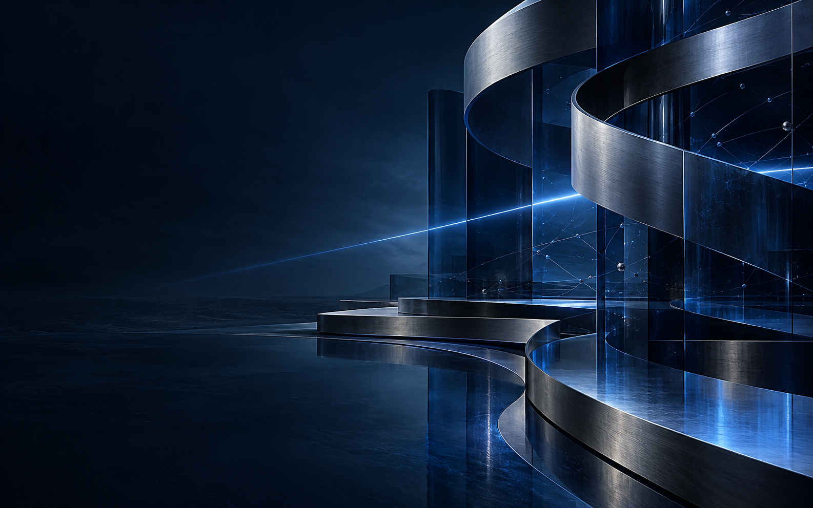

UIB
Multi-school
Cloud security
Centralized ERP
UNIVERSITY SYSTEM ARCHITECTURE
UIB cloud security architecture
I contributed to a secure, centralized cloud-architecture project for a multi-school university environment.
View project overview ↗DIGITAL PRODUCTS FOR AMBITIOUS BUSINESSES
Websites, SaaS products, dashboards and client portals built around real business problems.

SELECTED WORK
UNIVERSITY SYSTEM ARCHITECTURE
I contributed to a secure, centralized cloud-architecture project for a multi-school university environment.
View project overview ↗Private client work
Private client work
Private client work
Private client work
Private project details can be discussed in a project meeting when appropriate.
CAPABILITIES
Fast, clear websites that show what you do and guide the right client to contact you.
Useful digital products for customers, members, partners and teams.
Custom dashboards for stock, bookings, leads, workflows and reporting.
A SIMPLE WAY TO WORK
Every project starts with the problem, not the technology.
We define the goal, users and bottleneck.
I map the essential experience before development.
I create the solution in focused stages.
We refine it with real feedback after launch.
LET'S TALK
Tell me what you need to improve. I will help you find the simplest digital solution to get there.
zianesouhail771@gmail.com ↗